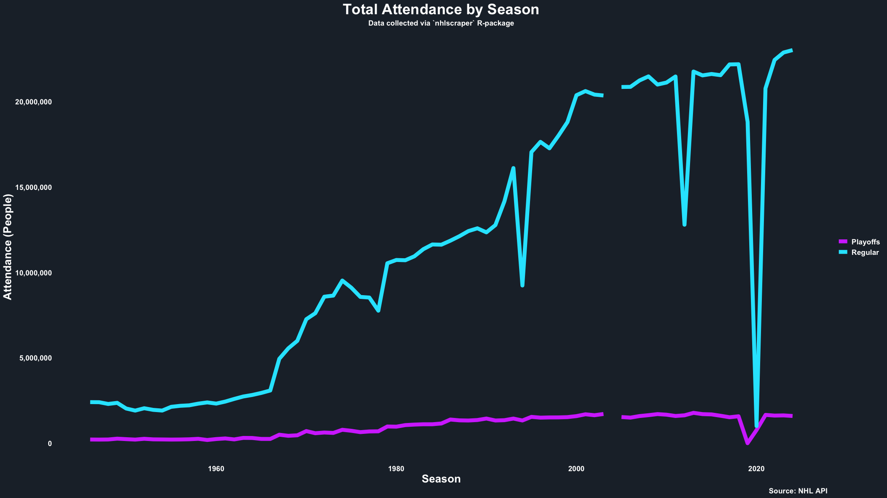
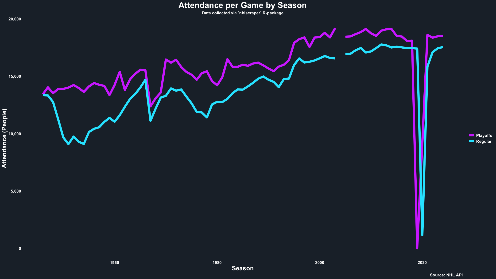

This example explores how one may create ggplot2 line
graphs for total attendance and attendance per game across all seasons.
Please contact me with your cool examples, and I can add them here
too!
# Load libraries.
library(nhlscraper)
library(tidyverse)
library(scales)
# Set colors.
charcoal <- '#202A35'
n_cyan <- '#1EE6FF'
m_purple <- '#D443FF'
# Clean data.
all_seasons <- get_seasons() %>%
mutate(seasonId=id)
all_attendance <- get_attendance() %>%
mutate(seasonStart=seasonId%/%10000) %>%
select(
seasonId,
seasonStart,
Regular=regularAttendance,
Playoffs=playoffAttendance
) %>%
left_join(all_seasons, by='seasonId') %>%
mutate(
`Regular per Game`=Regular/totalRegularSeasonGames,
`Playoffs per Game`=Playoffs/totalPlayoffGames
) %>%
select(
seasonStart,
Regular,
Playoffs,
`Regular per Game`,
`Playoffs per Game`
)
all_attendance_long <- all_attendance %>%
pivot_longer(c(Regular, Playoffs), names_to='type', values_to='attendance')
attendance_pg_long <- all_attendance %>%
select(
seasonStart,
Regular=`Regular per Game`,
Playoffs=`Playoffs per Game`
) %>%
pivot_longer(
c(Regular, Playoffs),
names_to='type',
values_to='attendance'
)
# Total Attendance
ggplot(all_attendance_long, aes(x=seasonStart, y=attendance, color=type)) +
geom_line(linewidth=3) +
scale_color_manual(values=c(Regular=n_cyan, Playoffs=m_purple)) +
scale_y_continuous(labels=comma_format()) +
labs(
title='Total Attendance by Season',
subtitle='Data collected via `nhlscraper` R-package',
caption='Source: NHL API',
x='Season',
y='Attendance (People)',
color=NULL
) +
theme_minimal(base_family='') +
theme(
panel.grid=element_blank(),
plot.background=element_rect(fill=charcoal, color=NA),
panel.background=element_rect(fill=charcoal, color=NA),
legend.background=element_rect(fill=charcoal, color=NA),
legend.key=element_rect(fill=charcoal, color=NA),
text=element_text(color='white'),
plot.title=element_text(color='white', face='bold', size=24, hjust=0.5),
plot.subtitle=element_text(color='white', face='bold', size=12, hjust=0.5),
plot.caption=element_text(color='white', face='bold', size=12),
axis.text=element_text(color='white', face='bold', size=12),
axis.title=element_text(color='white', face='bold', size=18),
legend.text=element_text(color='white', face='bold', size=12)
)
# Attendance per Game
ggplot(attendance_pg_long, aes(x=seasonStart, y=attendance, color=type)) +
geom_line(linewidth=3) +
scale_color_manual(values=c(Regular=n_cyan, Playoffs=m_purple)) +
scale_y_continuous(labels=comma_format()) +
labs(
title='Attendance per Game by Season',
subtitle='Data collected via `nhlscraper` R-package',
caption='Source: NHL API',
x='Season',
y='Attendance (People)',
color=NULL
) +
theme_minimal(base_family='') +
theme(
panel.grid=element_blank(),
plot.background=element_rect(fill=charcoal, color=NA),
panel.background=element_rect(fill=charcoal, color=NA),
legend.background=element_rect(fill=charcoal, color=NA),
legend.key=element_rect(fill=charcoal, color=NA),
text=element_text(color='white'),
plot.title=element_text(color='white', face='bold', size=24, hjust=0.5),
plot.subtitle=element_text(color='white', face='bold', size=12, hjust=0.5),
plot.caption=element_text(color='white', face='bold', size=12),
axis.text=element_text(color='white', face='bold', size=12),
axis.title=element_text(color='white', face='bold', size=18),
legend.text=element_text(color='white', face='bold', size=12)
)